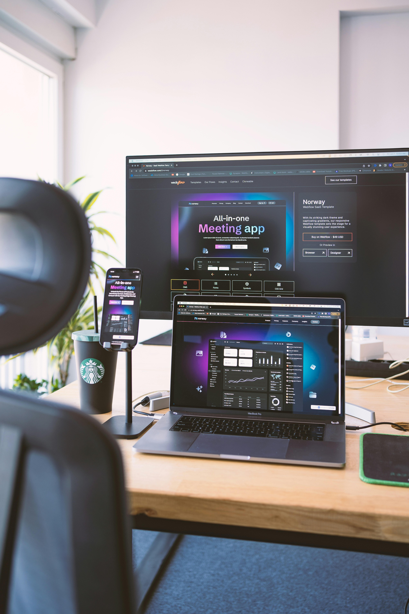

Just shipped a responsive Q timeline clone. The desktop grid breathes, the mobile nav behaves, and the tweet box actually posts. Clean UI remains undefeated.


Just shipped a responsive Q timeline clone. The desktop grid breathes, the mobile nav behaves, and the tweet box actually posts. Clean UI remains undefeated.


Frontend checklist: layout, feed, sidebar, composer, interactions, responsiveness, dark mode, custom views, and deployment readiness. That is how you collect marks properly.
Small screens deserve real design too. Bottom navigation, readable spacing, and no mystery horizontal scroll. Your cousin's Android has been considered.
Working through a clean feature list today: tabbed feeds, better interactions, and a project history that shows steady progress.
Reminder: a simple static project can still feel production-ready when assets load, pages respond, and the README tells the marker exactly what to test.